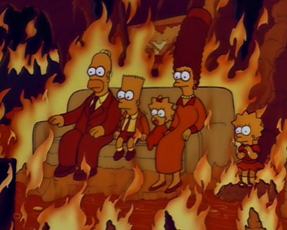

Back for Seconds!
The Simpsons' second season originally aired between October 11, 1990 and May 9, 1991, and contained 22 episodes, beginning with "Bart Gets an "F"". Another episode, "Blood Feud", aired during the summer after the official season finale. The executive producers for the second production season were Matt Groening, James L. Brooks, and Sam Simon, who had also been EPs for the previous season. The episode "Homer vs. Lisa and the 8th Commandment" won the Primetime Emmy Award for Outstanding Animated Program (for Programming Less Than One Hour), and was also nominated in the "Outstanding Sound Mixing for a Comedy Series or a Special" category.